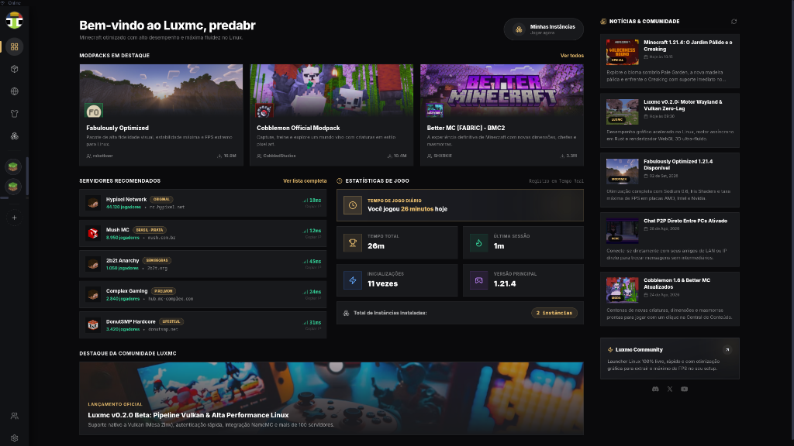

Desenvolvido para máxima fluidez, sem microtravadas e com consumo otimizado de memória. Gerencie instâncias, mods do Modrinth e jogue com suas skins e capas personalizadas.

Cadastre seu Gamertag aqui no site para personalizar sua skin e capa. No aplicativo, basta digitar seu Nickname para entrar instantaneamente!
Cada detalhe foi otimizado para eliminar travamentos e garantir 100% de estabilidade.
Renderização acelerada via GPU, sem loops pesados de partículas ou filtros desnecessários. Respostas instantâneas a cada clique.
Inicie seus mundos recentes com 1 clique no "Jump In" e navegue por todas as suas instâncias de forma visual e intuitiva no estilo Modrinth.
Explore milhares de mods, modpacks, resource packs e shaders do Modrinth com resolução automática de dependências.
Suporte nativo para contas oficiais da Microsoft com autenticação segura no navegador, além de acesso offline direto com o seu nickname.
Visualize sua skin em tempo real em um visualizador 3D interativo com suporte para modelos Steve e Alex e capas comemorativas.
Integração nativa com Wayland, GameMode, MangoHud e tradução OpenGL para Vulkan via Zink para máxima taxa de quadros (FPS).
Escolha a versão compatível com a sua distribuição Linux ou sistema operacional.
Compatível com Ubuntu, Fedora, Arch, Pop!_OS e qualquer distro.
188 MB · PortátilInstalador oficial para Debian, Ubuntu, Linux Mint e derivados.
180 MB · InstaladorCompatível com Windows 10 e Windows 11 64-bit.
195 MB · Executável